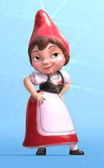
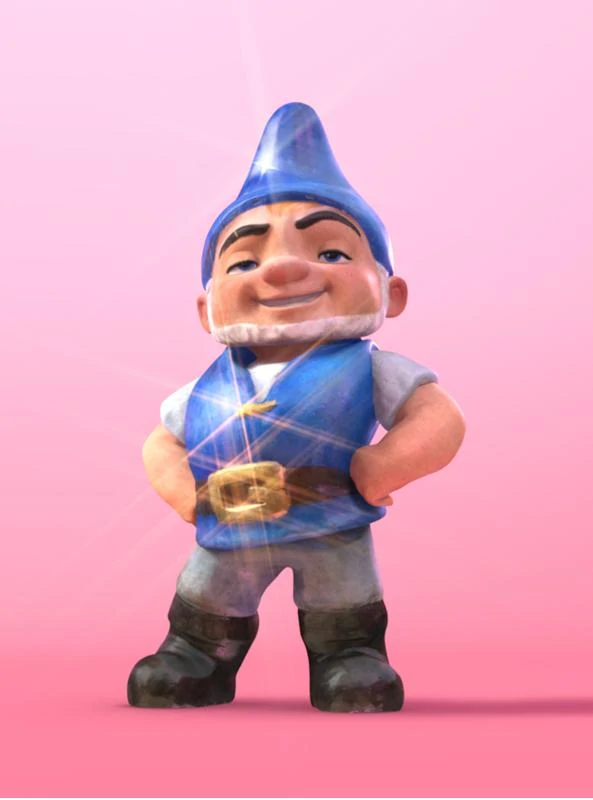
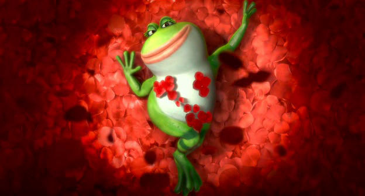
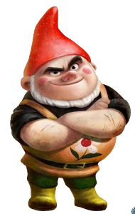
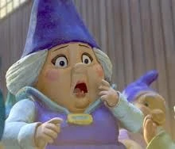
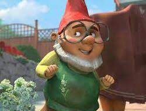
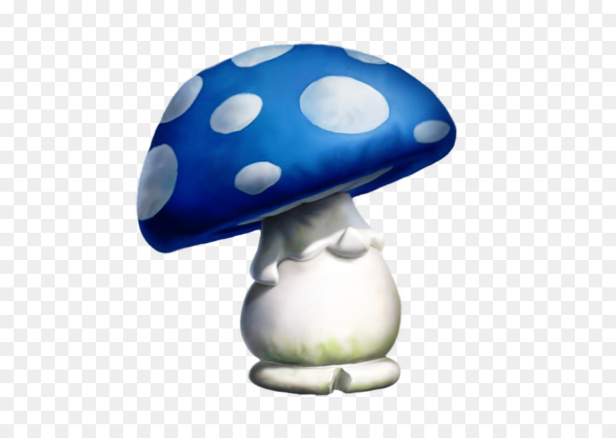

Juliet é filha de Lord Redbrick e sua falecida esposa, a líder feminina dos Blue-Red Gnomes.
o interesse amoroso de Gnomeo e mais tarde esposa, a melhor amiga de Nanette e a deuteragonista do filme

Gnomeu é o filho de Lady Bluebury e seu falecido marido, o marido de Julieta, o líder masculino dos Gnomos Azul-Vermelhos e o principal protagonista do filme
Ele gosta de corridas de cortador de grama contra seu rival, Teobaldo , além de ter um romance com Julieta.

é um sapo verde bica, que é uma amiga leal de Julieta Capuleto.
Como visto mais tarde no filme, Paris, que foi designado por Lord Redbrick para cuidar de Julieta, foi apreciado por Nanette.

Teobaldo é primo de Julieta. Rival de Gnomeu e persegue pequenos gnomos azuis. É um gnomo bravo e competitivo
Penadinho é um flamingo solitário que faz amizade com o casal e futuramente vai morar no jardim com eles

Lady Bluebury é a líder dos Gnomos Azuis que vivem no jardim da Sra.
em Stratford-Upon-Avon e era rival de Lorde Redbrick e dos Gnomos Vermelhos que moram ao lado no jardim do Sr. Capuleto.
Lord Redbrick é o líder dos Gnomos Vermelhos que vivem no jardim do Sr.
Capuleto e competem contra Lady Bluebury e os Gnomos Azuis que vivem no jardim da Sra. Montague.

. Ele é provavelmente o principal jardineiro dos Reds e tem um amplo conhecimento de plantas e como cultivar coisas.
Ele foi arranjado para se casar com Julieta Capuleto, mas se apaixonou pela amiga de Julieta, Nanette .

Grande companheiro de Gnomeu desde o início do filme, estão sempre juntos.